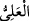

“Nihayet onların yüreklerinden korku giderilince:”
“
” zıt mânâlı kelimelerdendir. Hem korkutmak, hem de korku ve endişeyi ortadan
kaldırmak demektir. “
” korkunç bir şeyden ve endişe cinsinden insana ârız olan
ürkme ve çekingenliktir. Bu sebeple “
(Allah’tan korktum)” denilebildiği halde
“
(Allah’tan ürktüm)” denilmez.
Mânâ şöyledir: Nihâyet şefâat edenlerin ve mü’minlerden şefâat edilenlerin
kalplerinden korku izâe edilip kaldırılınca… demektir. Kafirlere gelince onlar şefâat
isteme makamından pek uzakta, kalblerinden korkunun kaldırılacağı yerden ise bin
konak ötededirler.
“Nihâyet” kelimesi, Allah’ın izin verdiği kimselere şefâat izni verileceğini hissettiren
kendisinden önceki kısmın sonunun ne olduğunu bildirmektedir. Çünkü önceki kısım
cevabı gözetip beklemeyi gerektiren bir izin talebini hissettirmektedir. Sanki “Onlara
nasıl izin verilir?” diye sorulmuş, cevap olarak da şöyle denilmiştir: Onlar izin isteme
ve yalvarıp yakarma makamında beklerler. Uzun zaman korku ve endişe içinde dururlar.
Nihayet onların kalblerinden bu korku ve endişe izâle edilir ve kendilerine icâbet
edildiğinin müjdeleri ortaya çıkar. İşte o vakit kendilerine şefâat edilenler: İzin
konusunda “Rabbiniz ne buyurdu?” derler.” Çünkü izne muhtaç olanlar ve bu hususa
önem verenler onlardır.
“Onlar da:” şefâat edecek olanlar da: “Hak olanı buyurdu.” Yâni Rabbimiz, hak
sözü söyledi, derler. Bu söz ise müstehak olanlara şefâat konusunda izin verilmesidir.
Şefâat edecek olanların bu sözü söylemelerinin sebebi, bizzat izin isteyen, şefâat
edileceklerle Allah Teâlâ arasında şefâatle aracı olanların onlar olacağından dolayıdır.
“O, yücedir, büyüktür.” derler.” Bu söz de şefâatçilerin sözlerine dâhildir. Onlar bu
sözü izzet sâhibi yüce Allah’ın azametinin sonsuzluğunu, O’ndan başka herkesin eksik
olduğunu îtiraf etmek için söylemişlerdir. Yâni şan, güç/hükümranlık, zât, sıfat, söz ve
fiil olarak yücelik ve ululukta tek olan yalnız O’dur. Melekler ve peygamberler gibi
yaratılmışların en şereflilerinden hiçbirinin O’nun izni olmadan konuşma hakkı yoktur.
Bazıları der ki: “
” mutlak galibiyet (kahr) ve her şeye muktedir olmakla
yarattıklarının üstünde olandır. “
”, kadri yüksek demektir. Allah Teâlâ bu isimle
vasfedildiği zaman mânâsı, ‘O vasfedenlerin vasfının, hattâ âriflerin ilminin kendisini
ihâta etmesinden yüce olan’ demektir.
Kulun mutlak olarak “
(yüce)” olması tasavvur edilemez. Çünkü kul hangi
dereceye nâil olsa mutlaka varlıkta ondan daha üstünü vardır. Bu üstün dereceler
peygamberlerin ve meleklerin dereceleridir. Evet, insanlar içinde daha yukarısına
başkasının ulaşamadığı bir dereceye nâil olunduğu tasavvur edilebilir. Bu derece bizim
Peygamberimiz’in (a.s.) derecesidir. Fakat o da mutlak değil izâfî bir yüceliktir.
Bu isim ile ahlâklanmak yüce işlere meyl edip bayağı işlerden uzak olmakladır. Bir
hadîste şöyle buyrulmuştur: “Allah yüce işleri sever, bayağı işleri ise sevmez.”[26] Hz.